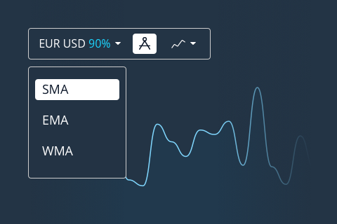
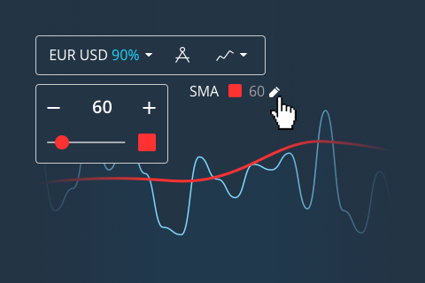
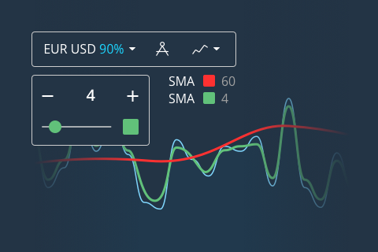
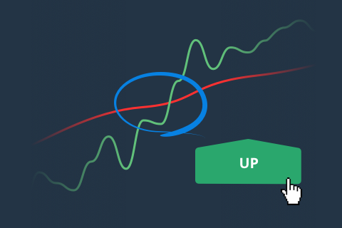
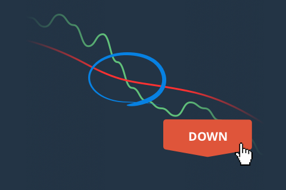

1. На платформе откройте раздел “Индикаторы” и выберите SMA

2. Над графиком нажмите настройки индикатора. Измените значение на 60, и установите красный цвет

3. Повторите первый шаг, выбрав еще один индикатор SMA. Но в этот раз измените значение на 4 и установите зеленый цвет:
Как видите, вдоль графика пояились две линии. Всё, что вам нужно делать - это заключать сделки при их пересечении:
Как только вы увидите, что зеленая линия пересекла красную - заключайте сделку на повышение:

И наоборот, если зеленая линия пересекает красную сверху-вниз - торгуйте на понижение.

Следуя этим простым правилам, вы всегда сможете заработать на платформе.